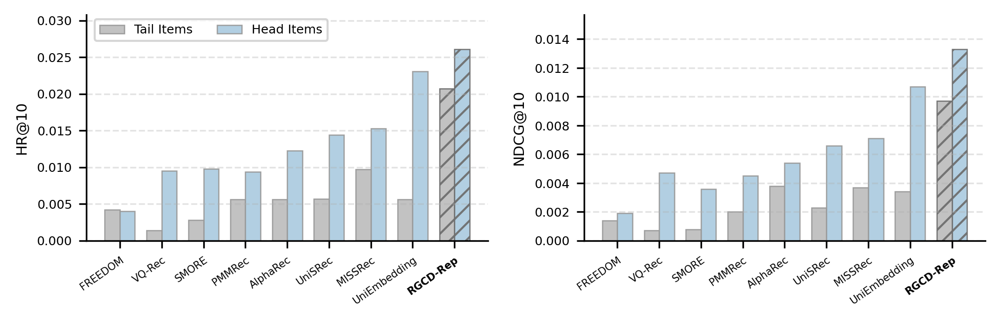
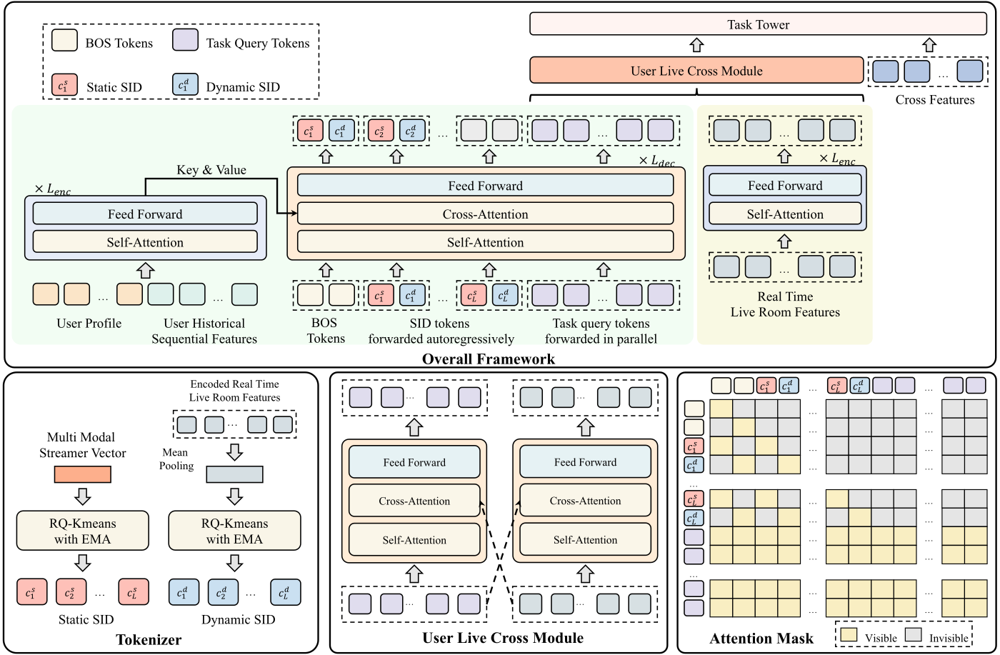

分享 SHARE
快手直播推荐的数据很稀：同一批用户，平均每人在短视频里有 224.93 次正向互动，在直播里只有 20.78 次。很自然的想法是把用户在短视频里的兴趣搬到直播上，但“看了某类短视频”不一定等于“会进某类直播间”，搬错了反而拖累效果。这篇论文提出 RGCD-Rep（Reasoning-Guided Cross-Domain Representation）。它先让一个大的多模态模型逐对判断“这条短视频和这个直播间在品类、主体、话题上对不对得上”，再把这种判断能力教给一个 2B 的小模型。然后用小模型给每条短视频和每个直播间算向量，并分成“能跨两边通用的部分”和“只属于本领域的部分”两份。离线召回 HR@10 比最强基线高 17.59%，线上关注 +0.83%。
做跨域推荐或想把大模型用进召回、又卡在线上延迟的人值得读：线上完全不调大模型，向量全部离线算好放进近邻索引。证据来自快手一个场景，离线测试只有一周数据。
它到底在解决什么问题？
论文统计了一周日志：同一批约 11 万用户，直播侧的互动总数只有短视频侧的十分之一左右，说明直播这边的行为数据确实少得多。按出现次数排在后 50% 的直播间只占 10.90% 的互动；测试集里 14.65% 的用户在前六天完全没有直播正反馈，是直播侧的新用户。
已有的多模态跨域方法通常直接拿预先抽好的图像、文本向量当物品特征。这些向量是固定的，说不清“为什么这条短视频的观众会去看那个直播间”，所以跨域信号不可靠，容易出现负迁移：把本不相关的兴趣硬拉到一起，效果反而变差。
方法：先教小模型判断能不能迁移，再学两份向量

训练前先准备配对：从同一时间窗的日志里找“被同一批用户一起看过”的短视频和直播间配成一对。每对配对有一个行为强度分。对这个分数，论文只列出了它的组成信号，合成方式和取值范围复现时需要自己定。组成信号有两类：两者被同一批用户一起看的频繁程度，以及用户和它们互动的深浅（短视频看时长、完播、点赞、评论、分享；直播看时长、送礼、关注、点赞、评论）。这个分数有两个用处：先按它挑出高置信的配对作为两个阶段的训练数据，后面再和语义迁移分一起决定配对算不算“能迁移”。
第一阶段要让小模型学会看懂内容。老师是冻结的 Qwen3.6-35B-A3B。对每一对，老师从三个方面拆解两条内容：品类、关键主体、内容话题，每个方面给出标签和一句证据，再判断两者在这一方面是否对得上（对得上记 1，否则记 0）。三个方面的平均值就是这一对的语义迁移分。为了让小模型上线后能单独处理任意一条内容，配对的推理结果被拆成两条单条内容的样本，用标准的“预测下一个词”目标训练学生 Qwen2-VL-2B，让它照着老师写出这三项标签。学生的输入里插了 16 个可学习的特殊 token（论文叫 chorus token，设计沿用前人的工作），它们最后一层的输出用来汇总整条内容的多模态信息。
第二阶段学两份向量。短视频和直播共用同一个学生模型做编码。每条内容得到 16 个特殊 token 的输出，再用两个可学习的查询向量各做一次加权平均：查询向量和每个 token 输出做点积、除以维度的平方根、过一次 softmax 得到 16 个权重，加权求和后做归一化。一份叫可迁移向量，一份叫残差向量。
可迁移向量用对比学习训练：一对里的短视频和直播间互为正样本，同一批里其他配对的内容当负样本，用余弦相似度，温度 0.05，两个方向各算一次再平均。
光靠一起被看过，并不保证兴趣真能迁移。所以作者把每对的行为强度分和语义迁移分直接相加（论文写作 q = b + r），按这个和给所有训练对排序：前 20% 当作“确实能迁移”，后 20% 当作“不能迁移”，中间的不参与这一项。对每一对分别算两份向量下的相似度，用两者之差乘 10 后过 sigmoid，表示“这一对应该由可迁移向量来解释”的概率；能迁移的对推着可迁移向量的相似度更高，不能迁移的对推着残差向量的相似度更高，让本领域特有的因素和行为噪声留在残差里。这一项损失乘 0.05 后加到对比损失上。
| 阶段 | 训练什么 | 目的 |
|---|---|---|
| 准备 | 用共同观看和互动深浅给短视频—直播配对打分 | 只用可信的配对做训练 |
| 第一阶段 | 2B 学生照着 35B 老师写出品类、主体、话题 | 把大模型的判断能力搬到能上线的小模型上 |
| 第二阶段 | 对比学习 + 按迁移分把配对分到两份向量 | 只让真能迁移的兴趣进入跨域向量 |
上线时，学生模型离线给所有短视频和直播间算出 1536 维可迁移向量，存进特征系统，再建跨域近邻索引；用户来了按他看过的短视频去索引里查直播间，作为一路新的召回，线上不调用任何大模型。训练用 8 张 H800，LoRA 秩 32，第一阶段 6 万样本、第二阶段 25 万样本。
实验结果
离线测试用前六天训练、第七天每个用户最后一次直播正向互动当目标；召回时把用户看过的短视频的可迁移向量取平均，去直播间里找内积最大的。
| 方法 | HR@10 | NDCG@10 |
|---|---|---|
| FREEDOM（单域多模态） | 0.0040 | 0.0018 |
| UniSRec（跨域，单一模态） | 0.0134 | 0.0059 |
| MISSRec（跨域多模态） | 0.0147 | 0.0066 |
| UniEmbedding（最强基线） | 0.0216 | 0.0097 |
| RGCD-Rep | 0.0254 | 0.0127 |
| 去掉第一阶段 | 0.0249 | 0.0122 |
| 去掉第二阶段 | 0.0101 | 0.0046 |
| 第二阶段冻结学生模型 | 0.0189 | 0.0088 |
消融说明主要收益来自第二阶段：去掉它 HR@10 掉到 0.0101，第二阶段只训练两个查询向量、不更新学生模型也掉到 0.0189。去掉第一阶段只略降到 0.0249，所以蒸馏更像一个好的起点，而不是主力。

在冷门直播间和直播新用户上，RGCD-Rep 领先最强基线的幅度都比在热门直播间、老用户上更大，说明它补上的确实是直播侧缺的那部分信号，而不只是把已有的直播行为学得更好。
线上在快手和快手极速版做了一周实验，作为召回的一路新通道：
| 应用 | 曝光 | 点击 | 关注 |
|---|---|---|---|
| 快手 | +0.37% | +0.34% | +0.83% |
| 快手极速版 | +0.38% | +0.13% | +0.93% |
关注涨得最多，和“帮用户发现新主播”的目标一致。
局限
- 只验证了短视频到直播这一个方向，反过来没做；也只有快手一家的数据。
- 离线测试只有一周日志，离线绝对数值很低（HR@10 约 0.025），主要看相对差距。
- 品类、主体、话题这三个方面是人定的，换到别的内容类型未必合适。
- “能迁移/不能迁移”的标签来自前后各 20% 的硬切分，比例和打分方式都会影响结果，论文没有做这方面的敏感性实验。
- 训练要 35B 老师逐对推理，线上部署时又用了约 100 万对重新训练，离线成本不低。
怎么借鉴
最值得借鉴的是部署方式：大模型只在离线阶段出现，先蒸馏成小模型，再离线算全量向量建索引，线上只查表。如果你有一个数据多的领域和一个数据少的领域，“把向量拆成可迁移和本领域两份、按配对是否可信分别推向两边”这一步可以单独试，先用行为分给配对排序就能做。前后 20%、温度 0.05、路由系数 10 这些超参需要按自己的数据重新调。
读完这篇，你觉得
夜读鸮记下了，谢谢你的反馈。
点一下即可，无需登录；再点一次撤回。只统计匿名次数，不记录你是谁。
相关论文RELATED
 Generative · 2026-11-06BRIDGE: Bridging the Semantic Quantization Gap for Generative Recommendation生成式召回根据用户历史逐位预测商品 SID，但普通下一码训练只检查正确编号的概率。正确码概率相同时，剩余概率分给哪些错误候选，并不会改变这项交叉熵。BRIDGE（生成式召回模型）想在猜对编号之外，也利用商品之间的相似关系来训练模型。在作者报告的 Beauty 消融中，两项附加损失合用的配置，比论文中不加这两项损失的对照配置，Recall@10 高 12.8%。
Generative · 2026-11-06BRIDGE: Bridging the Semantic Quantization Gap for Generative Recommendation生成式召回根据用户历史逐位预测商品 SID，但普通下一码训练只检查正确编号的概率。正确码概率相同时，剩余概率分给哪些错误候选，并不会改变这项交叉熵。BRIDGE（生成式召回模型）想在猜对编号之外，也利用商品之间的相似关系来训练模型。在作者报告的 Beauty 消融中，两项附加损失合用的配置，比论文中不加这两项损失的对照配置，Recall@10 高 12.8%。 Generative · 2026-10-24OneLatent: Latent Reasoning for Efficient Foundation Recommendation Models把大语言模型当作推荐底座时，让模型先写一段自然语言推理再输出下一个物品的语义编码，推理文本比语义编码长得多，解码时间和吞吐都被它拖住。OneLatent 的做法是在用户上下文后面接 3 个固定的特殊 token，训练分几步：先让模型在这些 token 之后复现教师大模型写的推理文本，再改成在它们之后直接输出目标语义编码；上线时只接这些 token，不生成任何推理文字。在工业数据上，OneLatent 前 64 个候选的语义编码命中率比先写推理再作答高 17.44%，推理吞吐是显式推理的 17.49 倍。
Generative · 2026-10-24OneLatent: Latent Reasoning for Efficient Foundation Recommendation Models把大语言模型当作推荐底座时，让模型先写一段自然语言推理再输出下一个物品的语义编码，推理文本比语义编码长得多，解码时间和吞吐都被它拖住。OneLatent 的做法是在用户上下文后面接 3 个固定的特殊 token，训练分几步：先让模型在这些 token 之后复现教师大模型写的推理文本，再改成在它们之后直接输出目标语义编码；上线时只接这些 token，不生成任何推理文字。在工业数据上，OneLatent 前 64 个候选的语义编码命中率比先写推理再作答高 17.44%，推理吞吐是显式推理的 17.49 倍。 Generative · 2026-07-13OneRec-Think: In-Text Reasoning for Generative Recommendation快手把 Semantic ID 加进 LLM 词表，先对齐物品 token，再教模型先写理由再给 ID，用束搜索里最好候选对上几位作 GRPO 奖励。线上离线生成推理和 ID 前两位，实时模型补最后一位，在 1.29% 的流量上，一周停留时长提高 0.159%。Beauty 上只微调 ID 的 Base 已在 R@5 上超过全部基线，公开数据上的推理是人工类目模板。
Generative · 2026-07-13OneRec-Think: In-Text Reasoning for Generative Recommendation快手把 Semantic ID 加进 LLM 词表，先对齐物品 token，再教模型先写理由再给 ID，用束搜索里最好候选对上几位作 GRPO 奖励。线上离线生成推理和 ID 前两位，实时模型补最后一位，在 1.29% 的流量上，一周停留时长提高 0.159%。Beauty 上只微调 ID 的 Base 已在 R@5 上超过全部基线，公开数据上的推理是人工类目模板。 Personalization · 2026-07-22Uncertainty as Remedy: Mitigating Satisfaction Label Bias in Short Video Multi-Objective Ensemble Ranking快手的 UAME 让融合排序模型除了打分再输出一个方差，表示各行为目标对这个视频的意见有多不一致，训练时给冲突大的视频对加权，线上只用均值打分、推理成本不变。EMER 底座上关注预估 GAUC 从 0.684 提到 0.724，线上长播 +1.6%；但 7 日留存只涨约 0.01%，不加权的消融有几项低于底座。
Personalization · 2026-07-22Uncertainty as Remedy: Mitigating Satisfaction Label Bias in Short Video Multi-Objective Ensemble Ranking快手的 UAME 让融合排序模型除了打分再输出一个方差，表示各行为目标对这个视频的意见有多不一致，训练时给冲突大的视频对加权，线上只用均值打分、推理成本不变。EMER 底座上关注预估 GAUC 从 0.684 提到 0.724，线上长播 +1.6%；但 7 日留存只涨约 0.01%，不加权的消融有几项低于底座。 Retrieval · 2026-03-24SaFRO: Satisfaction-Aware Fusion via Dual-Relative Policy Optimization for Short-Video Search快手搜索把“看完结果有没有马上改搜、隔多久再来搜、第二天还搜不搜”合成一个满意度奖励，训练奖励模型后用改造过的 GRPO 学每个请求的多目标融合权重。线上 10% 流量跑了两个月，改搜率降 0.319%，观看时长涨 0.611%，留存差距到第 60 天约 0.06%。满意度奖励的构造值得借鉴；但离线满意度和留存都是用自己的奖励模型和模拟器打分，线上对照只是 DDPG，算法改动的收益要打折看。
Retrieval · 2026-03-24SaFRO: Satisfaction-Aware Fusion via Dual-Relative Policy Optimization for Short-Video Search快手搜索把“看完结果有没有马上改搜、隔多久再来搜、第二天还搜不搜”合成一个满意度奖励，训练奖励模型后用改造过的 GRPO 学每个请求的多目标融合权重。线上 10% 流量跑了两个月，改搜率降 0.319%，观看时长涨 0.611%，留存差距到第 60 天约 0.06%。满意度奖励的构造值得借鉴；但离线满意度和留存都是用自己的奖励模型和模拟器打分，线上对照只是 DDPG，算法改动的收益要打折看。 Personalization · 2026-10-22ECHO: Efficient Cascade with Homogeneous Operators for Distillation-Guided 100K-Sequence Modeling十万条历史行为让候选逐一匹配的成本过高，作者先筛选可复用的原始记录，再按候选查找证据。筛选器向完整历史教师学习，并让检索与聚合共享相关性参数。快手线上实验中，应用使用时长提高0.613%。
Personalization · 2026-10-22ECHO: Efficient Cascade with Homogeneous Operators for Distillation-Guided 100K-Sequence Modeling十万条历史行为让候选逐一匹配的成本过高，作者先筛选可复用的原始记录，再按候选查找证据。筛选器向完整历史教师学习，并让检索与聚合共享相关性参数。快手线上实验中，应用使用时长提高0.613%。
Generative · 2026-06-09SSRLive: Live Streaming Recommendation with Dynamic Semantic ID淘宝直播的粗排模型 SSRLive 给每个直播间两套 Semantic ID：静态 SID 来自主播近几天的历史内容，动态 SID 由直播间此刻的实时特征量化而来，随热度和内容变化。生成式编码器–解码器放在用户侧，交替生成两套 SID 并用任务 query 抽表示，打分仍交给带用户–主播交叉特征的判别网络。线上观看时长涨 3.38%，算力涨约 16 倍，延迟只多 1.33%。离线提升小且不均匀，Watch200 的 GAUC 还略低于基线。
讨论
欢迎补充实验细节、复现经验或不同看法。需 GitHub 登录。
正在加载讨论…